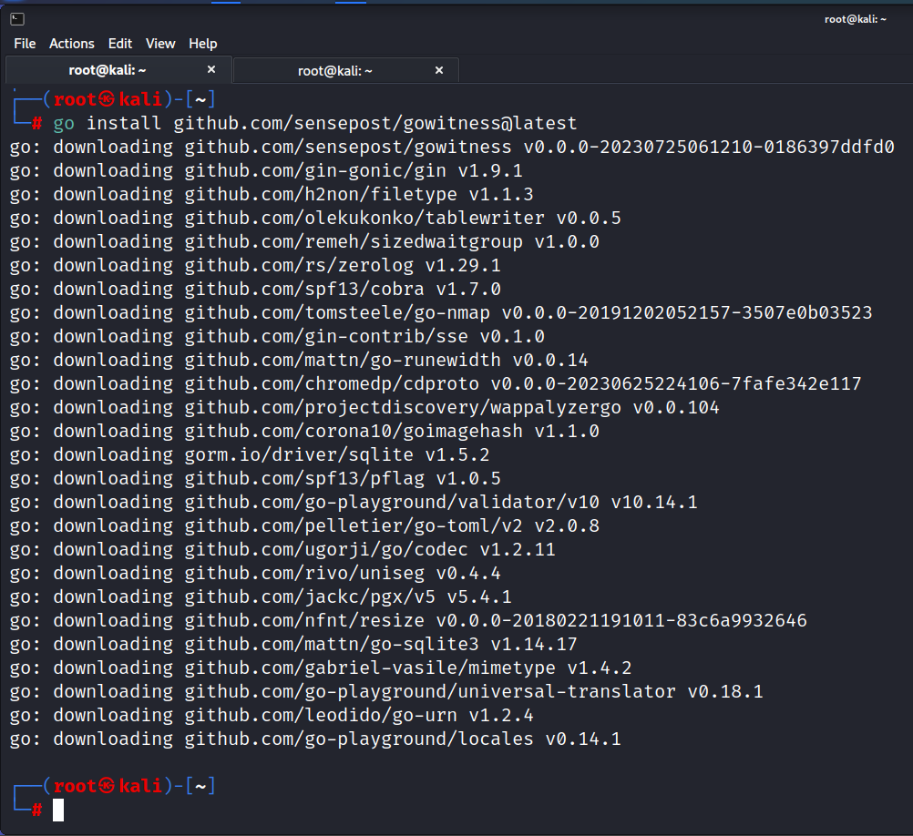

There is a tool called Pie Witness written in Python
This tool is called Go Witness written in Go
Install: go install github.com/sensepost/gowitness@latest
Syntax seems to change all the time oso please cheeck it

Getting this error

I resolved the error installed the another version from pimpylinux and now it's working fine.


And run the W command and I was good to go.
tesla and twitter didn't run but goggle run in the end
did chmod 775 so that i could open the image.